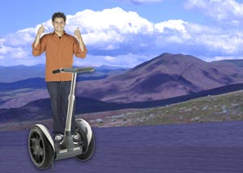

Documenting my trip around the US on ny very own Segway!

Well I made it 1200 miles already, and I passed through some interesting places on the way:
I saw some Burma Shave style signs on the side of the road today:
Passing cars,
When you can't see,
May get you,
A glimpse,
Of eternity.
I definitely won't be passing any cars.

My first day of the trip! I can't believe I finally got everything packed and ready to go, Because I'm on a Segway, I wasn't able to bring a whole lot with me:
Just the essentials. As Lao Tzu would have said, A
journey of a thousand miles begins with oe step Segway.
There's going to be an evil henchman meetup next month at my underground lair in Ðετröìτ. Come join us.